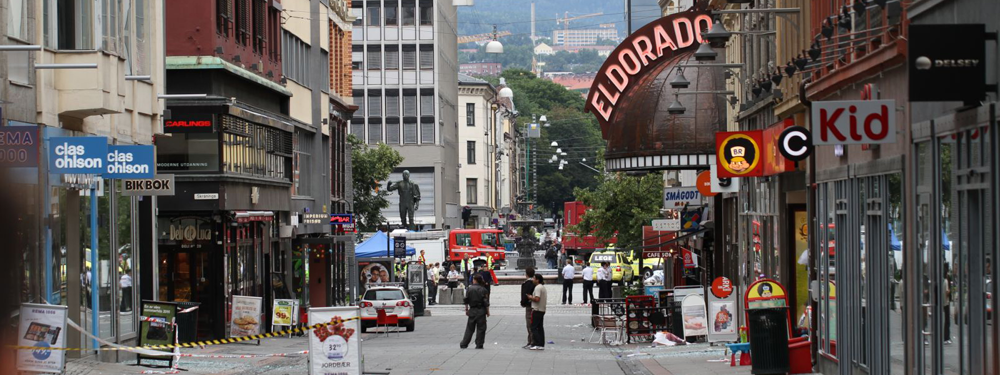

-

- La educación desde pequeños: creemos que nuestra educación influye mucho en nuestras acciones de futuro así que si les enseñamos a los pequeños valores como la tolerancia, el mundo será mejor.
- Implementar más acciones policiacas: hasta el momento muchos actos se han evitado gracias a que la acción policiaca ha actuado de manera efectiva pero la tecnología ha avanzado y creemos que se puede hacer mucho más.
- Implementar mejores medidas de seguridad en lugares públicos: nos hemos dado cuenta que no en todos los lugares existe vigilancia pública así que tenemos que tener en cuenta que esto debe cambiar por el bien social.
- Crear medidas de aviso en caso de un atentado: hoy en día existen muchas maneras de dar aviso y de estar atentos a cualquier acto sospechoso y tenemos muchos medios para lograrlo ya sea por medio de un dispositivo electrónico o alarma.
- Dar más castigos y programas de prevención: a las personas no se les haría tan fácil cometer este tipo de actos si saben que tendrán un castigo severo.
...
Terrorismo Explicado a Niños
Hay gente mala en el mundo
.gif)
Gente a la que le parece bien hacer cosas malas
Esas cosas malas aveces lastiman a personas
Pero nosotros no debemos ser asi, debemos ser un ejemplo
Motivacion Personal
Nosotros hemos visto que este problema se está agravando poco a poco así que pensamos que es necesario que se hable más de esto, ya que solo estando en un acuerdo todos las cosas pueden mejorar.
Soluciones ya Propuestas
Hemos visto también que una de las soluciones que se le han dado a este problema es la acción política, se han puesto sanciones a acciones como éstas, también otra medida que se ha tomado es que se ha actuado con la policía, quienes han detenido muchos de estos actos que están dispuestos a cometerse. Con todo esto entendemos que talvez no haya una solución que elimine por completo el problema pero si se puede disminuir.
Proceso de Entrevistas
Durante las entrevistas que realizamos nos dimos cuenta que efectivamente en nuestra cultura las personas están en contra de éstos actos, consideran que este tema es un tema muy complicado pero que todos estamos concientes de que no podemos dejarlo a un lado. Entrevistamos a dos personas de diferentes edades pero comparten prácticamente la misma idea, es un acto inaceptable.
Evaluacion
Hasta este momento pensamos que hemos mas que cumplido con los requerimientos del proyecto, por lo tanto nuestro desempeño ha sido muy bueno.
Segunda Parte Del Examen
Soluciones
Implementar mejores medidas de seguridad
Creemos que ésta es la mejor idea que podríamos implementar ya que todo este tema del terrorismo incluye que las personas que resultan afectadas es porque se encuentran de casualidad en el mismo lugar donde ocurrirá el suceso y como no suele haber mucha seguridad en las calles o lugares públicos sería excelente que esto existiera
Metodología
Hacer diálogos de gobierno donde se contraten a los mejores especialistas en el ámbito de tecnología para desarrollar un plan en donde se implementen las mejores medidas de seguridad y conforme a esto se ponga más vigilancia y se invierta en más tecnología para que sea de ayuda a la sociedad
Historia
Había una vez una familia que se dirigian al parque central de la ciudad para que sus hijos disfrutaran un momento de los juegos y el exterior cuando a lo lejos vieron a unos sujetos extraños, a los cuales se les notaba que no eran de la ciudad, entonces los padres temerosos de que resultaran ser malas personas dieron aviso a uno de los vigilantes del parque quien también dio aviso a los vigilantes que se encontraban en el lugar los cuales activaron una alarma que llegó al teléfono de cada una de las personas que se encontraban en un perímetro cercano del parque y grcias a esto las familias con calma se fueron del lugar y los vigilantes se hicieron cargo de las personas extrañas que resultaron tener planeado un atentado.
Calificacion: 100
Creemos que hemos trabajado bien en equipo y cumplimos con cada uno de los puntos que se pidieron
Liliana Alonso Guzman
Carlos Daniel Martinez Montoya